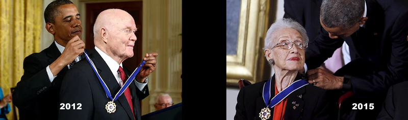

MOTIVATION
History highlights the collective glory of grand achievements, but the individual contributions of women tend to receive less attention than the contributions of men. Hidden Figures, a successful Hollywood film, celebrates the contributions of female mathematicians Katherine Johnson and her colleagues whose technical efforts made it possible for astronauts like John Glenn reach the frontiers of space. The charts below compare the Guardian’s coverage of these two historic figures before and after the announcement of the movie.
21st Century Guardian Coverage of
Katherine Johnson and John Glenn
Attention Boosts

Made with Patience, Hope, and Love